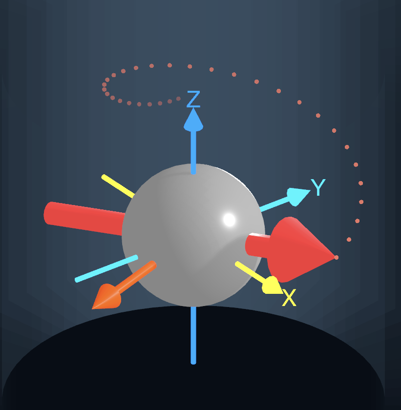
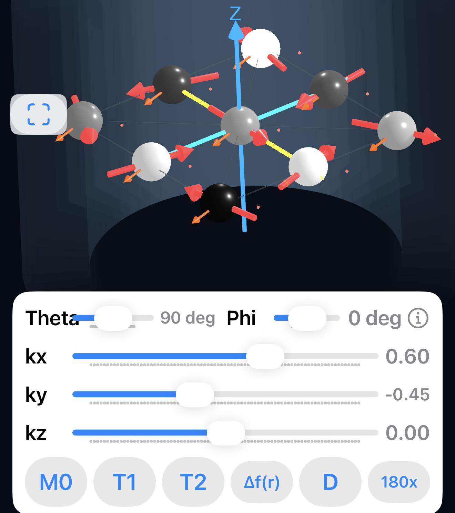
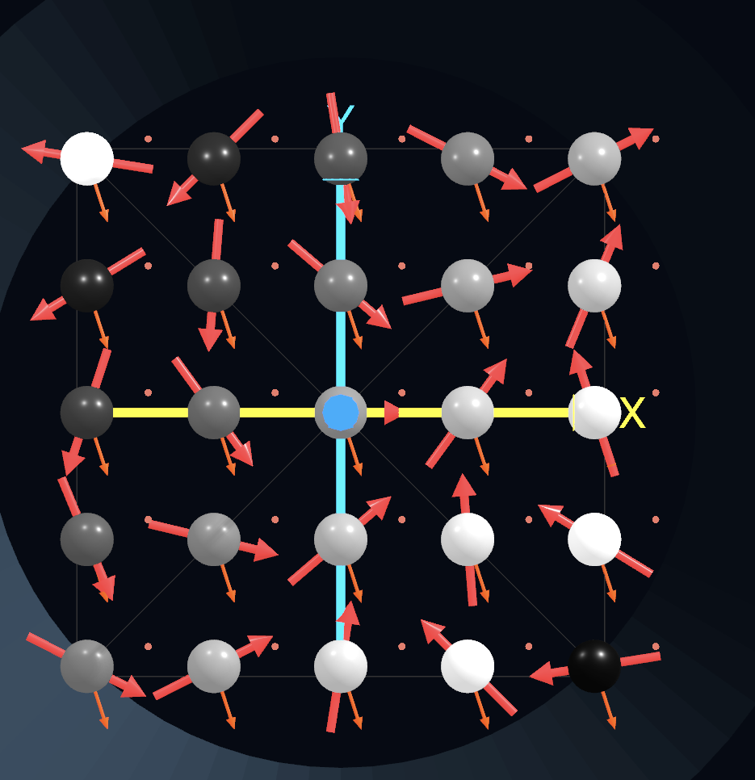
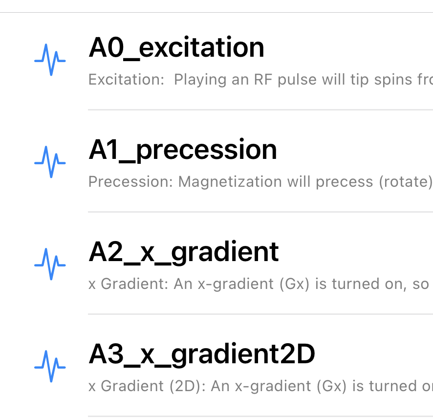
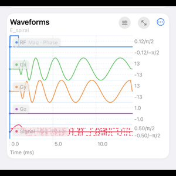
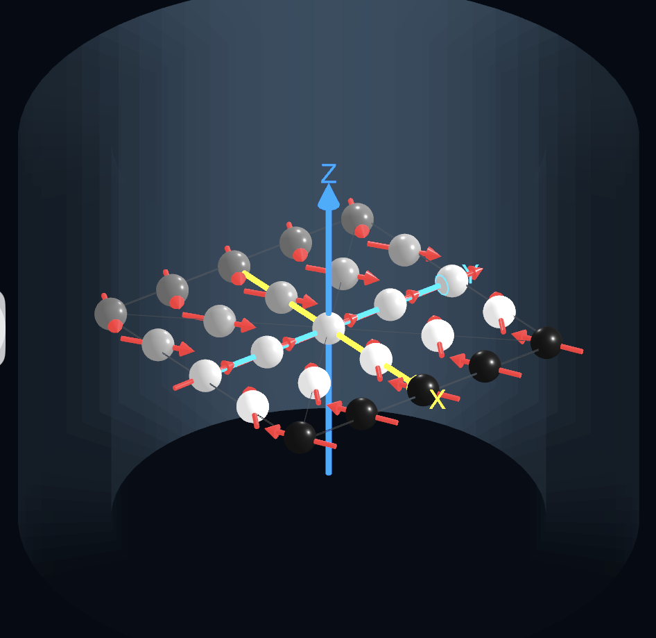
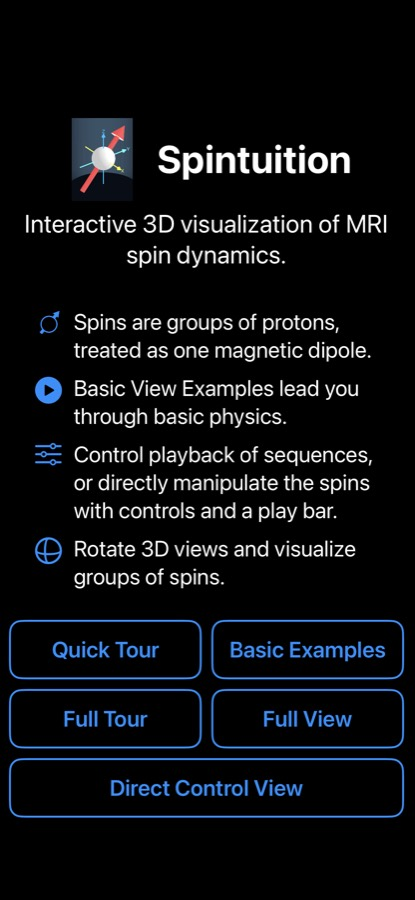

Spintuition
Spintuition Spintuition
Spintuition
Interactive, intuitive 3D graphical representations of MRI spin dynamics to aid in teaching, learning and interpretation. We welcome feedback and ideas to help teach MRI principles. All code will be shared through GitHub (soon!)
Beginning with a quick tour and basic examples, you can advance to view RF and gradient
waveforms, directly control RF/gradients, or directly manipulate the spins themselves for
illustration. Spins are rendered as 3D vectors, and Pulseq sequences (.seq) can
be loaded and displayed for compatibility with other tools.
Highlights

Guided examples
A built-in series walks from polarization and precession through gradients, encoding, selective excitation, spin echoes, and on to EPI, spiral, CPMG and bSSFP.

Direct control
Set spin angles and k-space phase directly, apply relaxation, off-resonance, diffusion and 180° pulses — a quick way to demonstrate a spin echo.

3D vector array
An X×Y×Z lattice of spins over a 25 cm FOV. Orbit, zoom, snap to axial / sagittal / coronal views, and show averages, trails and “mini magnet” shading.

Sequence panel
RF, Gx, Gy, Gz and signal waveforms with a scrubbable timeline. Record your own waveforms with live sliders, then save or export them.

Pulseq compatible
Load any Pulseq .seq file with import scaling, and use optional
# Simmr… comment directives to set the matrix, relaxation, view and more.

Slowed down to see
Sequences play about 1000× slower (1 ms ≈ 1 s), and gradients are scaled so phase is visible as a fraction of the field of view.
Getting started
On launch, the welcome screen offers several entry points:
- Quick Tour — a short guided introduction to the controls.
- Basic Examples — step through the introductory physics examples.
- Full Tour — a complete walkthrough of the Full View.
- Full View — spins, waveforms and playback together.
- Direct Control View — manipulate spins directly.
The welcome screen can be skipped in future, and shown again from Settings.
Also note that in the waveform/sequence panel, you can use the controls icon to manually turn on RF and gradients.